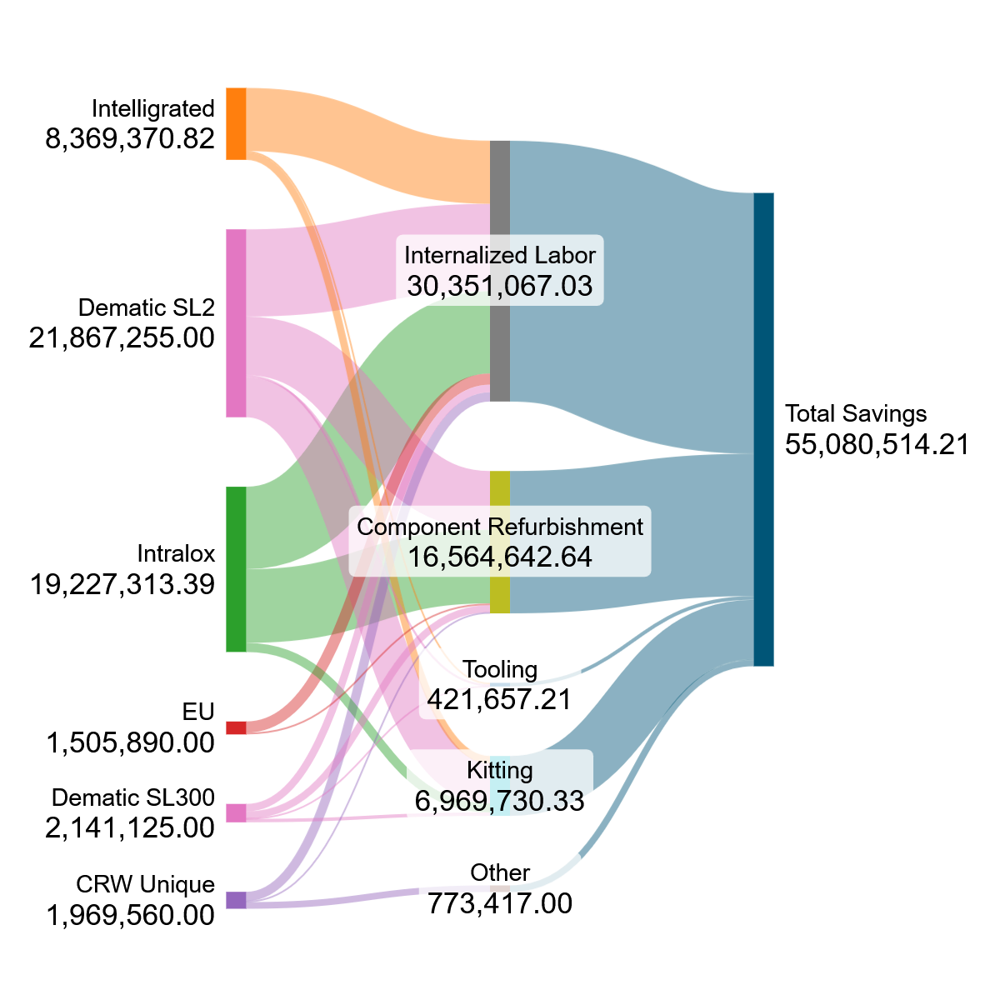

MHE Reliability – Asset Lifecycle Management
2025 Program Recap
We safeguard the most critical sorters in our networks through expert-led rebuilds, major repairs, and lifecycle standards that keep uptime high and unplanned failures off the calendar.
The Lifecycle Management Team and Central Rebuild Warehouse prevent operational failures across the network. Predictive analytics surface failures before they occur, shifting response from reactive to proactive. The Crash Cart program deploys complete repair kits within hours, not days, minimizing downtime. We control large-scale critical-part inventories with precision and rebuild high-value assets in-house to avoid replacement spend. We coordinate vendor part procurement while keeping rebuild ownership internal, and our strategy drives multi-million-dollar cost avoidance. When critical equipment stops, we restore network capability fast.
Central Rebuild Warehouse (CRW11)
The North American Central Rebuild Warehouse (CRW11) is the network’s reliability engine. Opened in 2024 beside KCVG in Hebron, KY, it operates 30,000 square feet of dedicated rebuild capacity with over 160,000 parts in inventory, supporting ten major asset fleets. A team of one manager, three qualified subject matter experts, and an Inventory Management Specialist runs the site.
An industrial parts washer initiative has been approved and is being installed to automate cleaning for refurbishment. This investment expands in-house refurbishment throughput and supports the growing rebuild pipeline.
Rebuild Job Box Contents.

Preparing Job Box Kits for Upcoming Rebuilds.
Slat Refurbishment Stations.
Schematic of the Industrial Parts Washer Being Installed.
Assets we oversee
High Criticality Assets Under Our Management
Dematic SL2 / SL300 / SC3 / RS200
Tier-1 shoe sorters with full tear-down and recommissioning playbooks.
Intelligrated Intellisort
Lifecycle coverage for critical Intellisort platforms, including major repairs.
Intralox S4500 & S7000
High-velocity belt sorters with staged kits and refurbishment standards.
Ambaflex
Vertical conveyor coverage with reliability guardrails and parts readiness.
Fives portfolio
Shoe sorters, singulators, and crossbelts under centralized lifecycle management.
Vanderlande
Crossbelt and shoe sorters covered with rebuild kits and SME oversight.
TGW Natrix
Natrix shoe sorters included with scoped rebuild and QA processes.
VDL family
SPO2 and SCS700 lines tracked with lifecycle criteria and reserved components.
Central rebuild warehouse kits
Standardized kits across all platforms staged through CRW11.
Intelligrated Intellisort Rebuild Being Wrapped Up
Replacing all Drive Shaft Components as part of a Major Repair.
Manually Jogging a Dematic SL2 During a Complete Rebuild
Dematic Technical and Quality oversight Managing Rebuilds on Site
Program Savings
High-level view of how the program performed across portfolios. Major repairs are tracked separately to keep rebuild outcomes clear.1
Verified savings by portfolio
Major Accomplishments of 2025
EU rebuild leadership
Established a dedicated manager for all EU rebuilds to globalize standards, align best practices, and accelerate the opening of a dedicated central rebuild warehouse in Europe.
Intralox rebuild engine
Stood up a fully functional Intralox rebuild program with a dedicated Lifecycle PM and leveraged bulk ordering discounts that saved $8.6M in parts.
Independent Intellisort execution
Completed 13 full Intellisort rebuilds without Intelligrated support (vs. just 2 in 2024), demonstrating in-house expertise.
Dematic SC3 breakthrough
Delivered our first Dematic SC3 rebuilds, paving the way to internalize SC3 programs by 2026.
Scale without disruption
Finished 135 full rebuilds and 14 major repairs across 83 sites with no delays to operations—adapting to the mid-year directive of no full building shutdowns by creating alternate flow plans.2
CRW11 capacity leap
Approved a large industrial parts washer for CRW11 to automate slat cleaning and lift throughput while reducing ergonomic strain.
Technicians rebuild team at PRG2.
Intralox Belt Replacement
Technician Working with Custom Designed Tools
Job Box Set Up Station.
Reliability Engineers
Reliability Engineers define and uphold the standards that make every rebuild successful. They are the first line of technical escalation when sites encounter issues and hold deep expertise across critical asset fleets. They establish the thresholds we track, design and maintain rebuild job plans, and validate every asset selected for a rebuild. They develop and deliver QSME training that equips technicians to serve as on-site technical and quality owners during execution. They operate as core partners to the Asset Lifecycle Program and Central Rebuild Warehouse, ensuring programs function with precision. Recognition is owed to this team for enabling the entire operation.
Chris Gordon – Dematic SL2 / SL300 / RS200
Brandon Quave – Intelligrated Intellisort
Jason Boone – Intralox S4500 & S7000
Jason Smith – Dematic SC3
Giuseppe Angelucci – Shoe sorters EU
Cammy Dudgeon – Intralox Sorters EU
Dematic SL2 Qualified SME graduating class.
Hands on review within a slat sorter.
Reliability Engineer Chris Gordon leading Dematic training.
EOL Predictive Model2
EOL forecasting model visualization.
Internally-developed forecasting system built to identify End-of-Life timing for critical assets. It evaluates unique degradation thresholds of critical components, tracks deterioration trends, and projects failure windows with focus on accuracy over static age-based assumptions. It incorporates reliability performance indicators including OEE and downtime history, and adjusts forecasts by actual equipment usage drawn from runtime data. The framework accepts any asset configuration with any number of critical components.
It also integrates reactive repair spend and network criticality weighting to ensure prioritization is aligned to operational risk and cost exposure. All outputs undergo validation before assets are selected for rebuild.3
Global footprint
North America & Europe coverage
Coverage spans 83 sites with rebuilds and major repairs tracked separately for clarity.
| Region | Sites | Full rebuilds | Major repairs |
|---|---|---|---|
| North America | 63 | 117 | 11 |
| Europe | 20 | 18 | 3 |
| Total | 83 | 135 | 14 |
The people behind the program
Robert Amarin
Set up the lifecycle program and oversees the full team.
Percy Miller
Owns all Dematic assets and their rebuild roadmap.
Christina Kingery
Oversees Intelligrated assets and will add Vanderlande next year.
Tyler Sosa
Leads Intralox and Ambaflex lifecycle plans.
Daryl Groves
Manages lifecycle coverage for Europe and Rest of World assets.
Derrick Waid
Leads the central rebuild warehouse team.
Alaina Arwood
Keeps site processes aligned and audit-ready.
Cody Steebner
Executes rebuild kits and QA checks.
Rich Vilvens
Specializes in sorter component refurbishment.
David Willard
Supports kitting, repair, and outbound staging.
Josh Persons
Leadership point for the lifecycle program and global alignment.
Krishna Sankaramanchi
Built the EOL forecasting model that predicts critical asset timing.